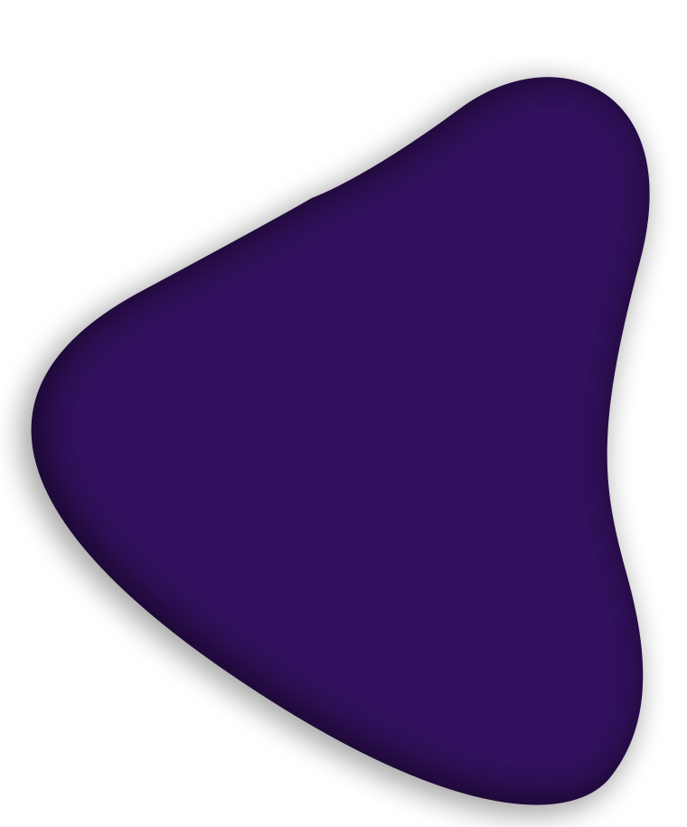
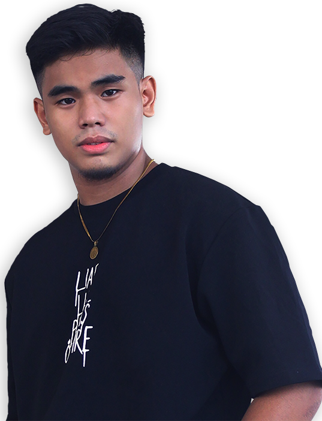

My Introduction
Full Name: Lester Dave M. Salazar
Nickname: Lester
Age: 20
Birthdate: November 15, 2001
High School Graduated From?
Asia Pacific College (Makati City)
Course: BSIT - MI
Scholarship?
Yes, Public High School Discount 50%
Did you choose this course? Yes
Why Yes?
Because I grew up exposed in technology,
and I dreamt of developing a video game
when I was still young. That is why I fall in love
in technology and chose IT as a Degree.

